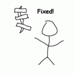
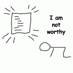
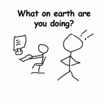
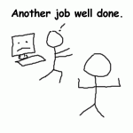
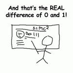

コードの道で、私はこれまでに多くの奇妙な敵と、奇妙な味方に出会ってきた。私は少なくとも五種類の異なる「コード戦士」と接してきた。そのうちの有能な仲間たちは開発の進行に役立ったが、他の者たちは私の計画のすべてを妨げているように見えた。
しかし、彼ら全員がソフトウェア開発の「神殿」に居場所を持っている。これらの異なるスタイルのプログラマーをうまく調整できないなら、プロジェクトが多くの時間を費やしたり、不安定になったり、コードが読みにくくなったりする問題に気づくだろう。
补漏灵型
くそっ、コードは完璧じゃなくても、動けばいいんだ！
这种人是你公司的基础。当哪里出现差错的时候他会迅速的修补，在某种程度上，保证不会再出错。当然，他不会操心它如何工作，易用性如何等等琐碎的问题，但是他会去修补问题，而不是说一大推废话，做些浪费时间的事情。利用这种员工最好的方法就是：交给他们一个问题去解决，然后走开。
补好了！
完璧主義・強迫性障害型
私のコードに何をしようというんだ！
この種のプログラマーは、君のデッドラインや予算など気にしない。それらはコードの優雅さに比べれば取るに足らないものだ。最終的に完成した結果を受け取るとき、君は栄光の輝きを放つ完璧なコードを提出する以外に何もする必要がない。これは非常に効率的だ。なぜなら、君が行うすべてのことは、そのコードの完璧さを損なうだけだからだ。彼らはコードを修正する資格を持つ唯一の存在なのだ。

我不值得
反编程型
私はプログラマーだが、コードなんて書かない！
彼らの世界にはただ一つの真理しかない。コードを書くことは悪である、と。もしどうしても書かなければならないなら、君はすでに間違った道に足を踏み入れている。他の誰かがすでにその作業を行っているのだから、彼らのコードを使えばいい。彼は、この開発が実際にはどれほど速く進むかを教えてくれるだろう。たとえ彼が他のプログラマーと同じかそれ以上の時間を費やしたとしても、最終的に結果を受け取るとき、君はわずか20行の簡潔で読みやすいコードを目にすることになる。それは十分に速くないかもしれないし、効率的でもないかもしれないし、前方互換性もないかもしれない。しかし、それは最小限の作業なのだ。

いったい何をやっているんだ！
半吊子型
まだ何を望むんだ？もう動いているじゃないか？
この種の人間はコードの品質など気にしない。それは他人の仕事だと思っている。彼は要求されたタスクを素早く完了する。あなたは彼の働き方を好まないかもしれないし、他のプログラマーもこの種の人間を憎んでいる。しかし、上司と顧客は彼を気に入る。彼はあなたの将来の仕事に大きな苦痛をもたらすだろう。それでも彼はいつも期限内に仕事を終えるので、（どんなに望んでも）彼を叱ることはできない。

こっちはもう完成したよ！
理论型
まあ、これで成立はするが、実のところもっと良い選択肢がある。
何をすべきかということよりも、この手の男は選択肢の方に興味がある。彼は80%の時間を、タスクを実装する方法を考えながらパソコンを凝視して過ごし、15%の時間は理不尽な締め切りへの不平不満に費やされ、4%の時間はさまざまな選択肢の間で選ぶことに使われる。コードを書くのはわずか1%の時間だけだ。最終結果を受け取るとき、君はたいていこんな不満も受け取ることになる——「時間があれば、もっといいものができたのに。」

これが0と1の違いってわけだ！
あなたはどのタイプ？
個人的には、自分は完璧主義タイプだと思っている。さて、君はどのタイプだろうか？ それとも、この記事で触れられていない別のタイプのプログラマーがいると思う？ ぜひ下にコメントを残してほしい。記事に反映させるから。
本文由赖信涛翻译自Steven Benner's Blog
クリックしてノートをシェア
笔记需要是本篇文章的内容扩展！
文章投稿，可点击这里
注册邀请码获取方式
分享笔记前必须登录！
注册邀请码获取方式